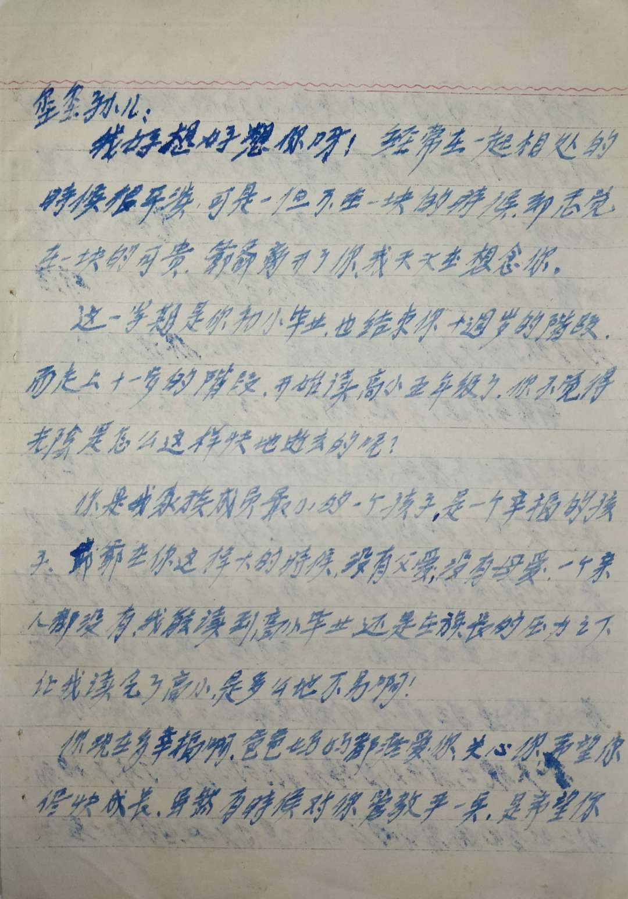
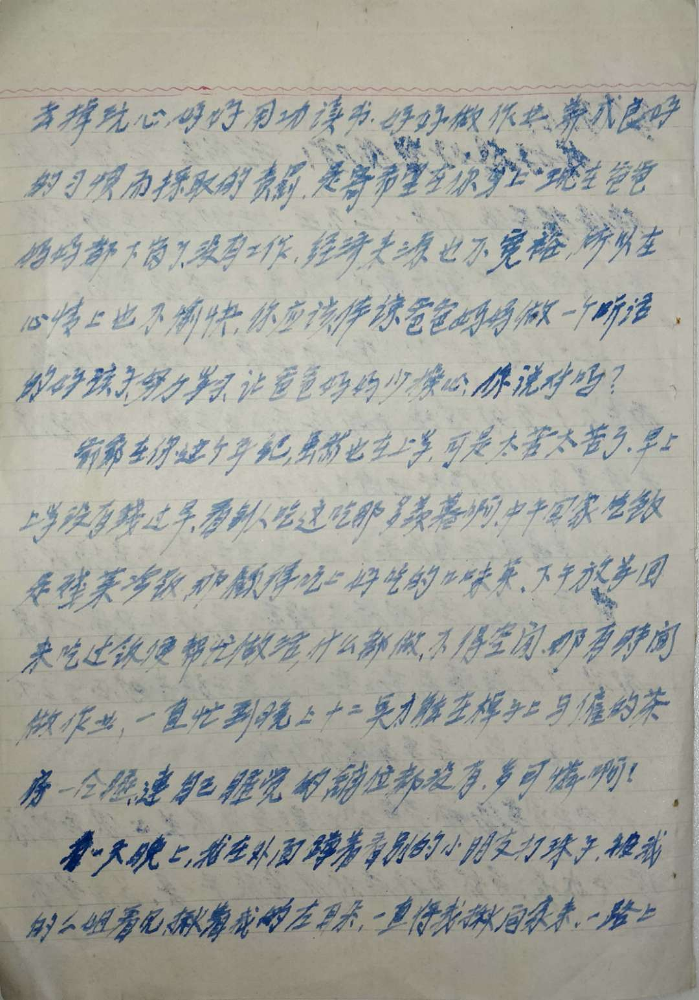
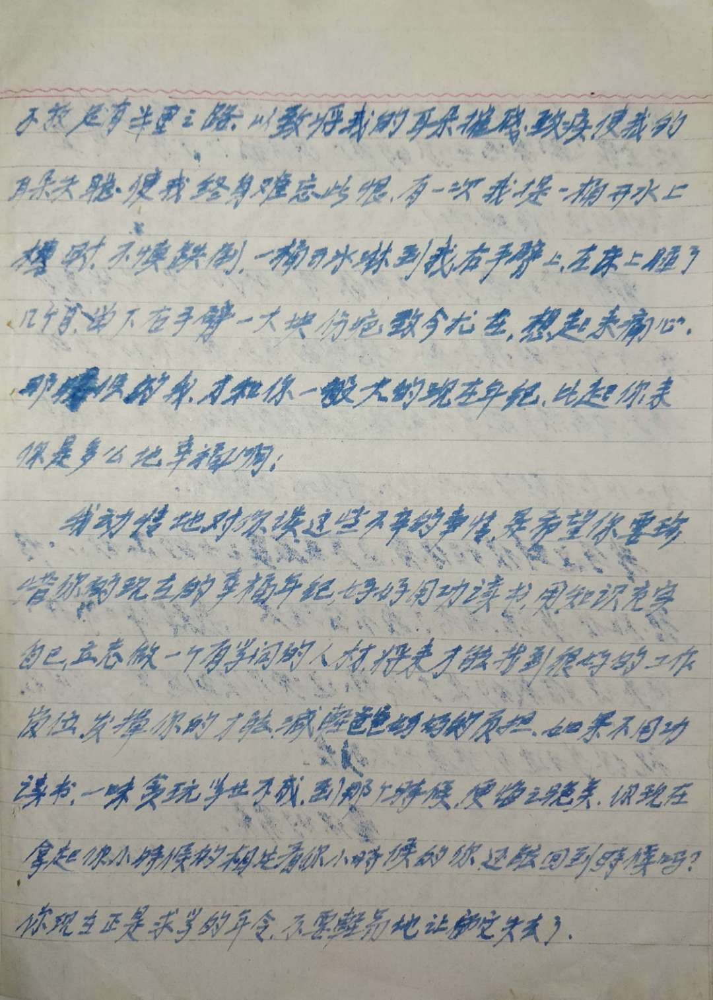
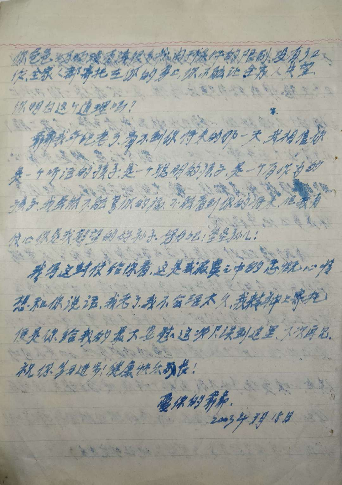

爷爷的亲笔信(1)
玺玺孙儿：
我好想好想你呀！经常在一起相处的時候很平淡，可是一但不在一块的時候却感觉在一块的可贵。爺爺离开了你，我天天在想念你。
这一学期是你初小毕业，也结束你十週岁的階段，而走上十一岁的階段，开始读高小五年级了，你不觉得光陰是怎么这样快地逝去的呢？
你是我家族成员最小的一个孩子，是一个辛福的孩子。爺爺在你这样大的時候，没有父爱，没有母爱，一个亲人都没有，我能读到高小毕业，还是在族長的压力之下让我读完了高小，是多么地不易啊！
你现在多幸福啊，爸爸妈妈都疼爱你，关心你，希望你尽快成长。虽然有時候对你管教严一点，是希望你去掉玩心，好好用功读书，好好做作业，养成良好的习惯而採取的责罰，是寄希望在你身上。现在爸爸妈妈都下岗了，没有工作，经济来源也不宽裕，所以在心情上也不愉快，你应该体谅爸爸妈妈做一个听话的好孩子，努力学习，让爸爸妈妈少操心，你说对吗？
爺爺在你这个年纪，虽然也在上学，可是太苦太苦了。早上上学没有錢过早，看到人吃这吃那多羡暮啊，中午回家吃飯是殘菜冷飯，那顧得吃上好吃的口味菜，下午放学回来吃过飯便帮忙做活，什么都做，不得空闲，哪有時間做作业，一直忙到晚上十二点才能在桌子上与僱的茶房睡，連自己睡觉的铺位都没有，多可憐啊！
有一天晚上，我在外面蹲着看别的小朋友打珠子，被我的二姐看见，揪着我的左耳朵，一直将我揪回家来。一路上不放，足有半里之路，以致将我的耳朵摧残致疾，使我的耳朵失聪，使我终身难忘此恨。有一次我提一桶开水上楼时，不慎跌倒，一桶开水淋到我的右手臂上，在床上睡了几个月，右手臂一大块伤疤致今犹在，想起来痛心。那時候的我，才和你一般大的现在年纪，比起你来你是多么地幸福啊！
我动情地对你谈这些不辛的事情，是希望你要珍惜你的现在的幸福年纪，好好用功读书，用知识充实自己，立志做一个有学问的人材，将来才能找到很好的工作岗位，发揮你的才能，減輕爸爸妈妈的负担。如果不用功读书，一味贪玩学业不成，到那个時候，便悔之晚矣。你现在拿起你小時候的相片看你小時候的你，还能回到時候吗？你现在正是求学的年令，不要輕易地让它失去了。
你爸爸妈妈没有读很多的书，由于條件的限制，没有了工作，全家人都寄托在你的身上，你不能让全家人失望，你明白这个道理吗？
爺爺我年纪老了，看不到你将来的那一天，我相信你是一个听话的孩子，是一个聪明的孩子，是一个有作为的孩子。我虽然不能享你的福，不能看到你的将来，但我有信心你是我期望的好孙子。努力吧！玺玺孙儿！
我写这封信给你看，这是我寂寞之中的感慨心情，想和你说话。我老了，我不会活太久，我精神上寄托便是你给我的最大安慰。这次只谈到这里，下次再见。祝你学习进步！健康快乐成长！
爱你的爺爺。
2003年3月15日
注
- 尽量保留了原信书中的错别字、繁体字
- 爷爷有三个孩子，两男一女，爸爸是老二，我未出生前爷爷就随爸爸住
- 爸爸结婚比较晚，43岁时我才出生，我是吴家最小的孩子
- 大伯乔迁至新房后接爷爷去他家住过一段时间，期间因与我分别的相思之情写下该信
- 爷爷已于二〇〇八年八月三十一日仙逝
附录



